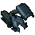
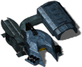
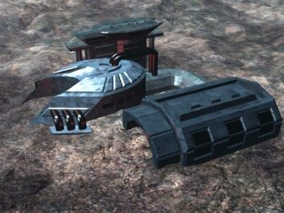

Light Factory



In-game info panel
- Power required:
- 1000
- Energy (HP):
- 3125
- Max number of workers:
- 100?
- Build time:
- 36 s?
Costs: Extract 1600 Iron 1400 Carbon 800 Titanium 300
Description
A factory based on terrestrial technology. Old generation basic ground units are produced here, as well as light new generation vehicles. After construction, vehicles are placed in your garages.
Related
- Requires
- Pioneer, Academy, Barracks, Nortus, Aman
- Unlocks
- Garages, Bunker, Spaceport, Heavy Factory, Jeep, Anaconda, V-primus, Centurion, Centurion, PENR Shell
- Produces
- Jeep (slot 0), V-primus (slot 1), Anaconda (slot 2), Centurion (slot 3)
Config values not shown in game (9)
SIGHT- 4
BUILDER- 100
TRACE- 2
HEIGHT- 1
COMPONENT_QUANT- 1
SPRITE_QUANTITY- 1
TYPE- R_hFABRYKA
AIBLD- AIBLD_LIGHT_FACTORY
AREA- 1, 1, 1, 0, 0, 0, 0, 0, 0, 0, 1, 1, 1, 0, 0, 0, 0, 0, 0, 0, 1, 1, 1, 0, 0, 0, 0, 0, 0, 0, 0, 0, 0, 0, 0, 0, 0, 0, 0, 0, 0, 0, 0, 0, 0, 0, 0, 0, 0, 0, 0, 0, 0, 0, 0, 0, 0, 0, 0, 0, 0, 0, 0, 0, 0, 0, 0, 0, 0, 0, 0, 0, 0, 0, 0, 0, 0, 0, 0, 0, 0, 0, 0, 0, 0, 0, 0, 0, 0, 0, 0, 0, 0, 0, 0, 0, 0, 0, 0, 0